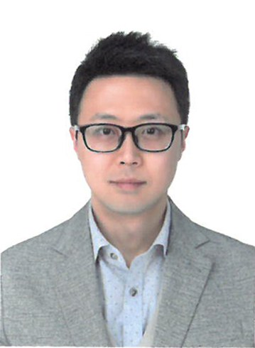
연구책임자 (Principal Investigator)
Prof. Gian Song · 송기안
국립공주대학교 신소재공학부 부교수. 금속재료 설계와 특성 분석, 고엔트로피합금, BCC 기반 초합금, 크리프 최적화, Zr 클래드 소재, 분말야금·주조 비교 연구, 3D 프린팅 금속 소재를 주요 연구 분야로 다룹니다.
People
현재 구성원, 학부연구생, 졸업생을 소개합니다.
People
연구실 구성원은 이름, 과정, 연구분야를 중심으로 소개합니다.

연구책임자 (Principal Investigator)
국립공주대학교 신소재공학부 부교수. 금속재료 설계와 특성 분석, 고엔트로피합금, BCC 기반 초합금, 크리프 최적화, Zr 클래드 소재, 분말야금·주조 비교 연구, 3D 프린팅 금속 소재를 주요 연구 분야로 다룹니다.
People
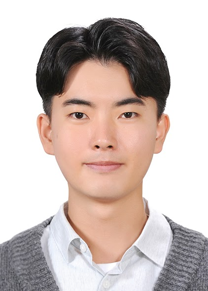
박사과정 (Ph.D.)
Yun Jong Jung
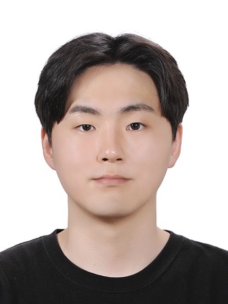
박사과정 (Ph.D.)
Kang Jin Lee
People
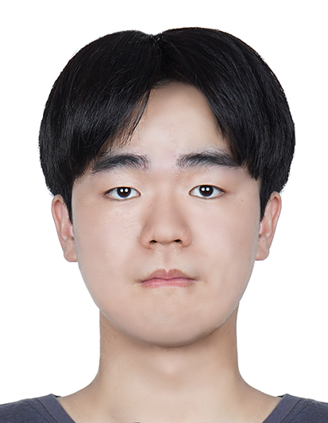
석사과정 (M.S.)
Seung Hwan Shin
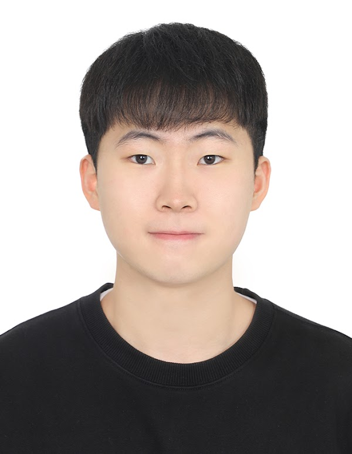
석사과정 (M.S.)
Soon Won Choi
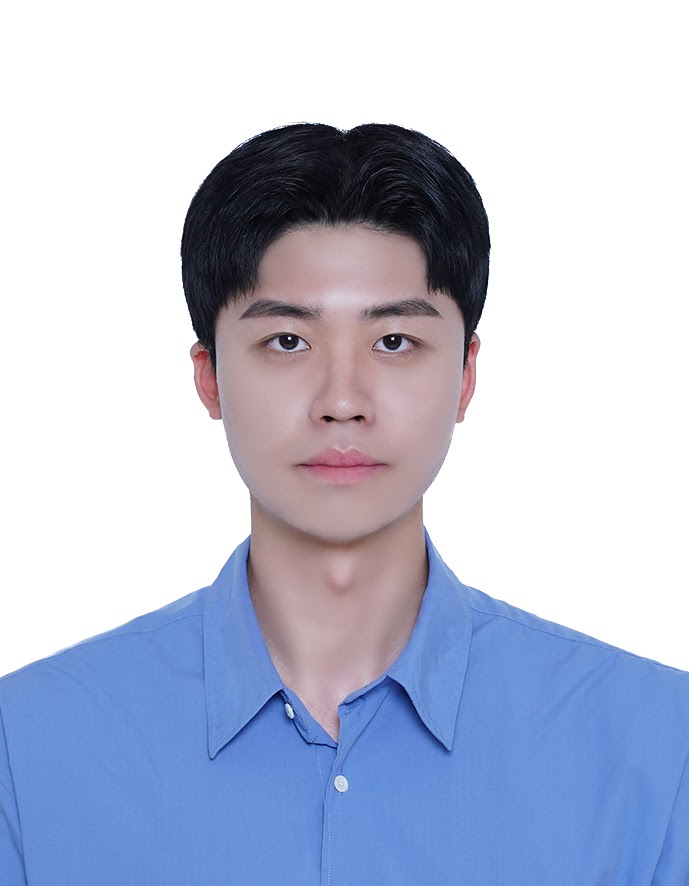
석사과정 (M.S.)
Seong Jin Im
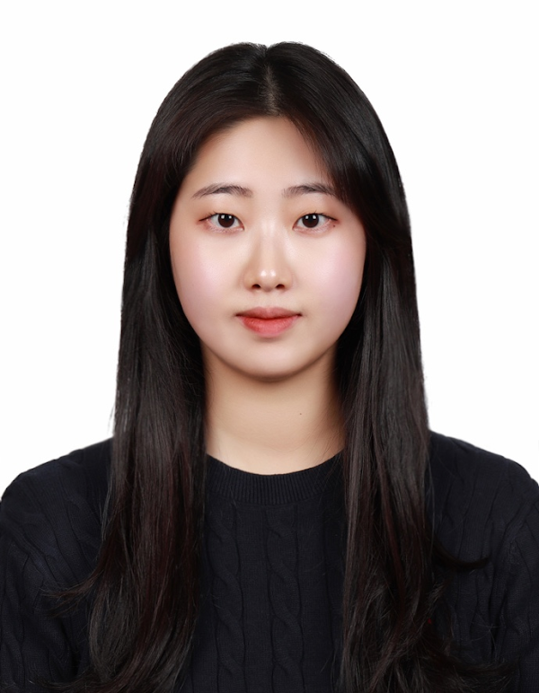
석사과정 (M.S.)
Min A Heo
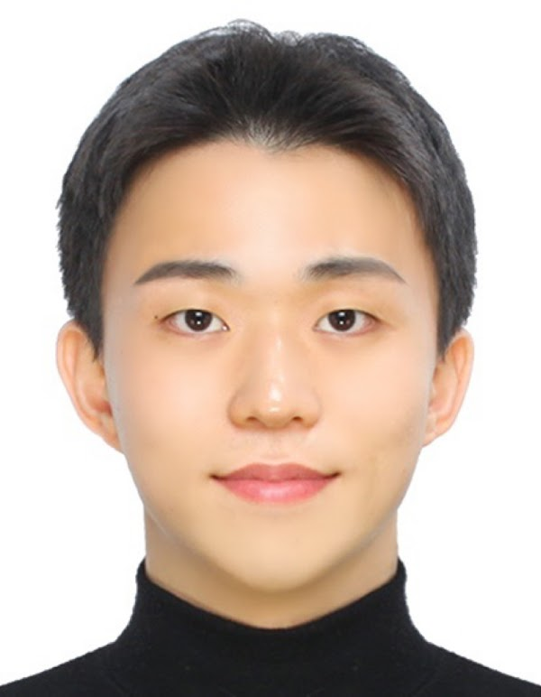
석사과정 (M.S.)
Sang Min Park
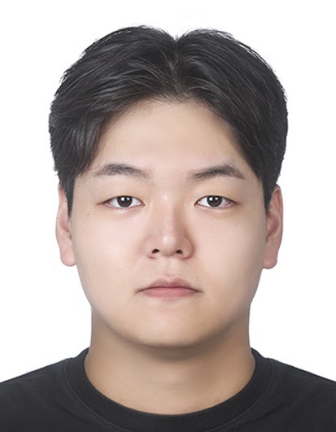
석사과정 (M.S.)
Min Cheol Kwon
People
학부연구생 (Undergraduate)
Yoon Ji Shin
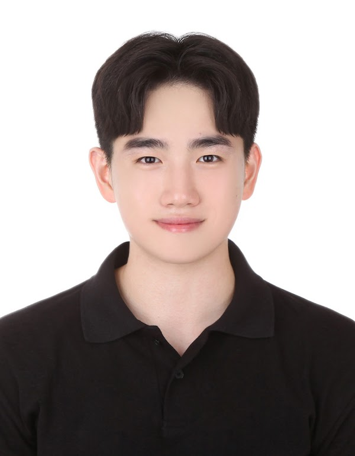
학부연구생 (Undergraduate)
Dong Hyun Kim
학부연구생 (Undergraduate)
Jeong Hyeon Im
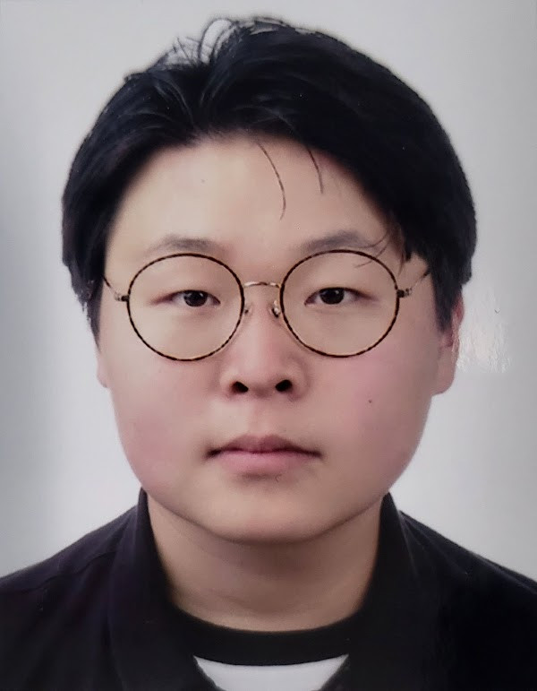
학부연구생 (Undergraduate)
Seon Yeong Kwak
People
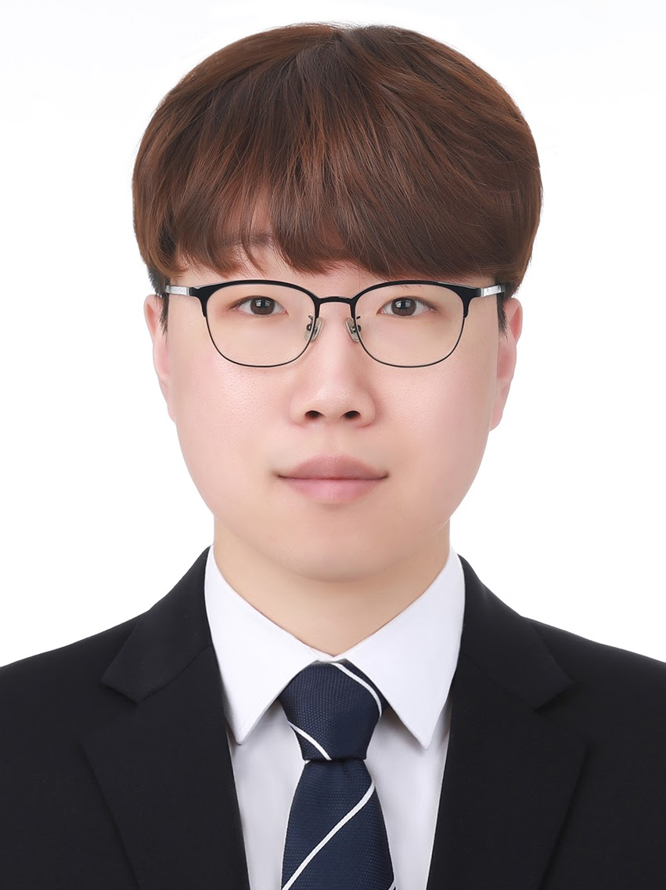
졸업생 (Alumni)
Jong Tae Kim
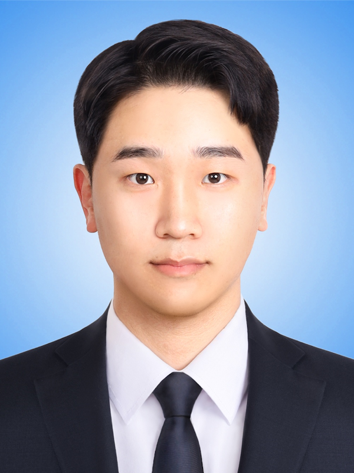
졸업생 (Alumni)
Ho Seop Song
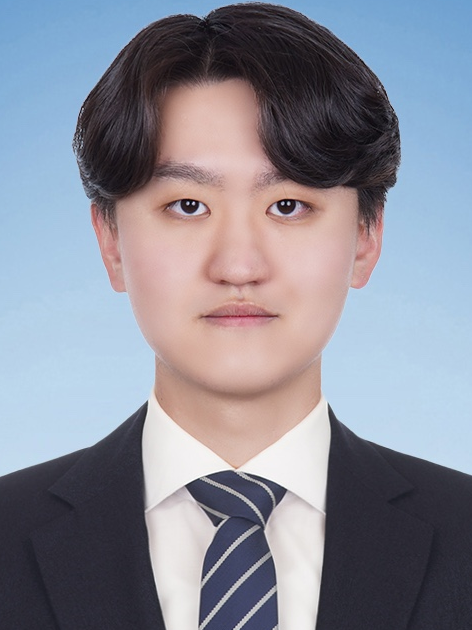
졸업생 (Alumni)
Byung Chan Cho
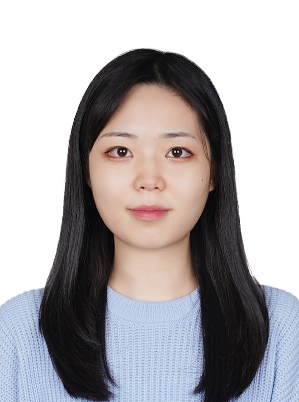
졸업생 (Alumni)
Jeong Eun Kim
졸업생 (Alumni)
Syed Muhammad Hamza Ifthikar
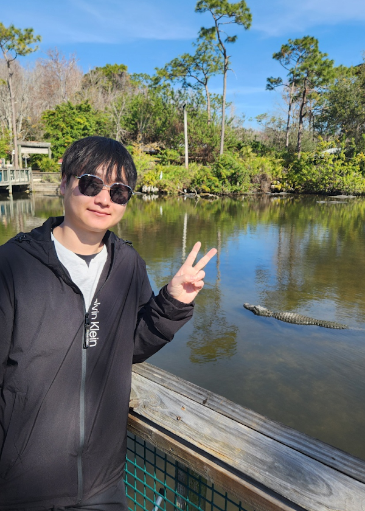
졸업생 (Alumni)
Kang Hyun Park